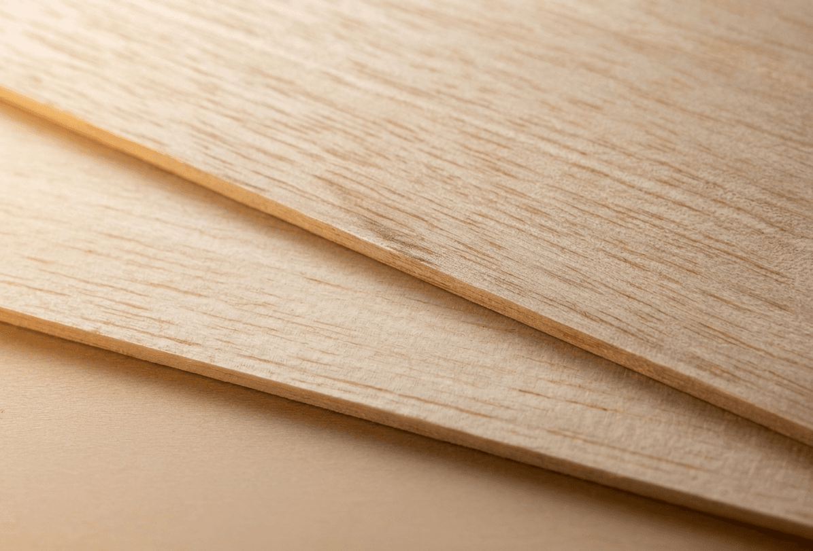
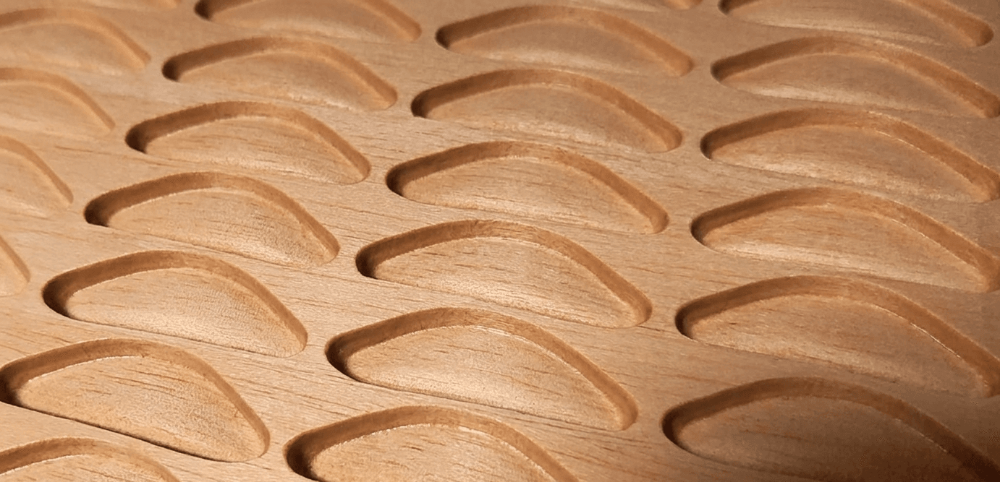
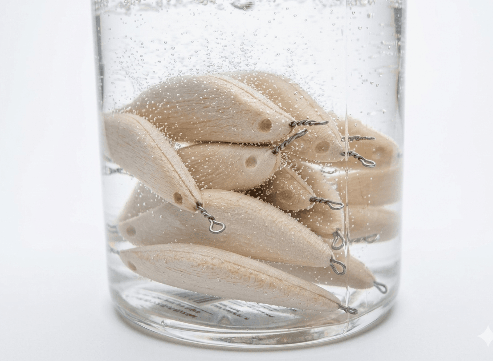
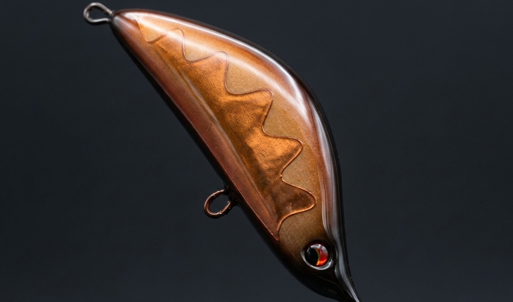

「命を吹き込むための妥協なき素材選び」
ウッドルアーは、木材の質から決まると言っても過言ではありません。厳選された天然木の中でも、密度・木目・含水率を徹底管理。個体差を最小限に抑え、理想のアクションを生むための「核」となる素材を、厳選しています。

「コンマ数ミリの差が追求と妥協を分ける」
マシニングによる精密加工で重心バランスを確保しつつ、最終的なフォルムは職人の手研磨により仕上げられます。機械の正確さと人の指先の感覚。その融合により、妥協に収まらず、私たちが追求するルアーの動きを生み出します。

「外観だけではない。内部に秘めた拘りの技」
ウェイトやワイヤーなどのパーツを、ミリ単位のズレも許さず配置。着水直後からの立ち上がりやレスポンスの良さを、この組み付けのプロセスによって決まります。

「動きを殺さない、浸水を許さないボディ」
木材の弱点である浸水を完全に遮断しつつも、天然素材特有の「浮力」と「キレ」を最大限に引き出すために特殊処理を施しています。薄く、かつ強靭な下地層を形成することで、激しい使用下でも本来のアクションを長期間維持します。

「機能美を纏う、芸術的なフィニッシュ」
幾重にも塗り重ねられた透明度の高いコーティングは、単なる装飾ではありません。深みのある輝きが所有欲を満たすのはもちろん、フィールドでの過酷な環境から色彩を保護し、使い込むほどに愛着が湧く道具の提供を約束します。